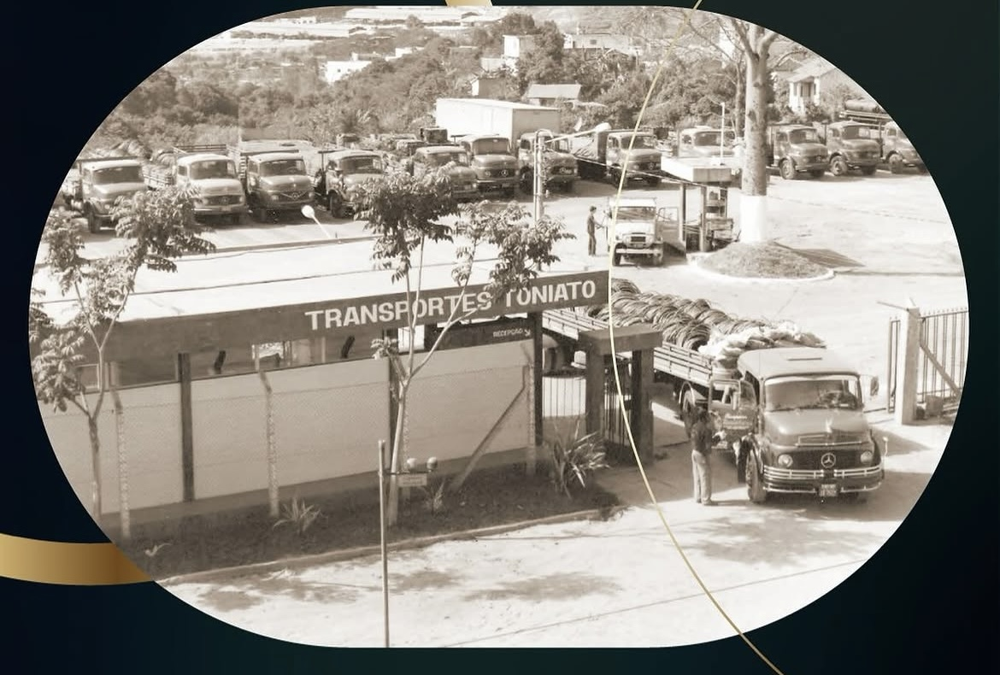
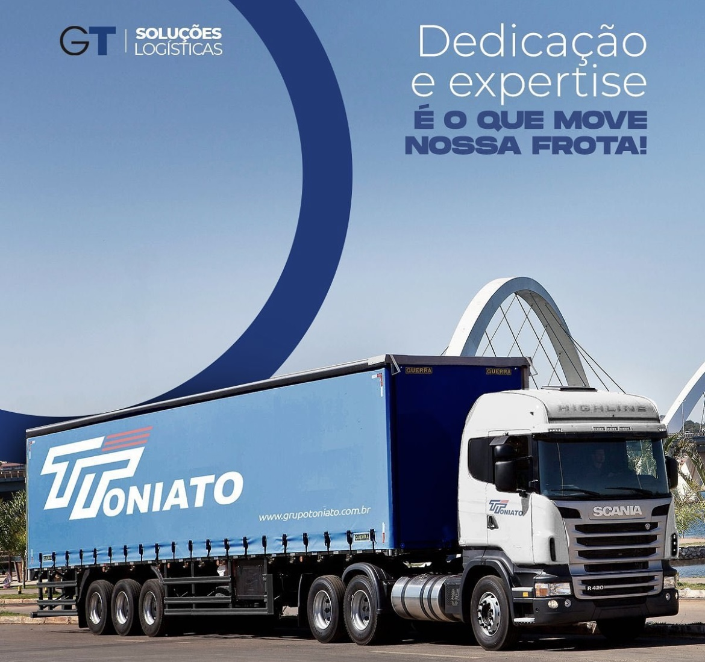

Análise estratégica
Grupo Toniato
Inteligência de mercado, posicionamento competitivo
e oportunidades mapeadas para os próximos anos.
O setor de logística está passando pela maior transformação tecnológica das últimas décadas. A maioria das empresas ainda não percebeu. Algumas estão se movimentando. Poucas já têm as peças certas na mão.
Este documento reúne dados de mercado, inteligência competitiva e um plano de ação construído a partir de pesquisa em mais de 15 fontes internacionais especializadas. O objetivo: mostrar onde está o espaço, quem está se movendo e o que pode ser feito agora.
O mercado agora
dos operadores logísticos no mundo reportam resultado financeiro concreto com o uso de inteligência artificial. Os outros 87% ainda estão testando ou nem começaram.
Pesquisa global com mais de 180 líderes do setor, 2026
Projeção de gastos globais com inteligência artificial aplicada a gestão de cadeia logística
Gartner, abril 2026
Impacto documentado da manutenção preditiva em frotas
Deloitte
Caso real: custo da manutenção preventiva versus corretiva
custo do reparo preventivo em 3 caminhões com falha prevista
Toque para detalhesModelos de inteligência artificial detectaram degradação simultânea no sistema de refrigeração de 3 caminhões na mesma rota. Os veículos foram direcionados para manutenção preventiva durante parada programada.
custo projetado se a falha tivesse acontecido na estrada
Toque para detalhesGuincho, carga parada, multas por atraso, danos secundários ao motor e perda de janela de entrega ao cliente.
OxMaint, 2026
Em outra operação, 80 caminhões monitorados geraram economia de US$ 1 milhão em 4 meses. FleetRabbit, 2026
Principais causas de atraso na manutenção de frotas
Pesquisa com mais de 600 profissionais de gestão de frota, 2026
Onde a GT já está na frente
Uma empresa fundada em 1974 no interior do Rio de Janeiro, que começou transportando tintas e vernizes e se especializou em produtos químicos perigosos. Hoje opera com mais de 700 veículos em mais de 16 unidades pelo Brasil. Atende Bayer há mais de 20 anos, Evonik há mais de 30 e Kemira há 50.
Em 2017, fundou um braço de tecnologia que desenvolveu um agente de inteligência artificial próprio, um sistema de gestão de transporte com mais de 10 anos de maturidade e uma torre de controle logístico com inteligência artificial. Tudo construído de dentro para fora.
Numa pesquisa global com mais de 180 líderes do setor (2026), apenas 13% dos operadores logísticos no mundo declararam ter resultado financeiro concreto com inteligência artificial. A GT está nesse grupo.

Matriz competitiva
Reconhecimentos
Ecossistema tecnológico
Logísticas
Inteligência artificial conversacional
110 idiomas, integrada ao WhatsApp
Sistema de gestão de transporte
9 módulos, 10+ anos de maturidade
Torre de controle logístico
gestão de exceções por inteligência artificial
Auditoria de fretes com inteligência artificial
Plataforma de emissões
protocolo GHG
13 agentes de inteligência artificial
personalizáveis por cliente
O que pode ser feito hoje
Comunicação do motorista com inteligência artificial
O motorista é o sensor mais importante da operação. Se ele percebe um problema no caminhão (barulho, vazamento, desgaste), na maioria das vezes só consegue reportar quando chega ao destino. Com um canal de inteligência artificial integrado ao WhatsApp, ele envia uma foto e uma descrição. A inteligência artificial classifica a urgência, identifica o tipo de problema e aciona o mecânico mais próximo da rota se for grave. Se não for, agenda o reparo no destino com a peça já solicitada. O tempo entre "percebeu o problema" e "alguém foi acionado" cai de horas para minutos.
Pesquisa com 600+ profissionais, 2026
Manutenção preditiva
Com mais de 700 veículos operando (a maioria com sensores embarcados de fábrica), já existe uma base de dados capaz de alimentar modelos de previsão de falhas. Temperatura do motor, pressão do óleo, voltagem da bateria, desgaste de freios. O sistema identifica padrões semanas antes da falha acontecer e aciona a cadeia de manutenção: solicita a peça, reserva o mecânico, reorganiza a frota para que o caminhão parado não comprometa nenhuma entrega.
Uma empresa com mais de mil colaboradores, muitos com anos e até décadas na mesma operação. Eles conhecem cada detalhe, cada problema recorrente, cada solução que nunca foi implementada porque não existia a ferramenta.
Não se trata de substituir ninguém. Se trata de dar a essas pessoas a capacidade de resolver o que elas sempre souberam que precisava ser resolvido. Problemas empurrados há anos dentro de qualquer empresa grande do setor agora podem ser endereçados pelo próprio time que convive com eles todo dia.
Inteligência artificial não traz o conhecimento. O conhecimento já existe. A inteligência artificial destrava ele.
Vagas identificadas durante a pesquisa
Vagas reais identificadas durante a pesquisa. Funções operacionais em unidades que estão crescendo. Cada uma delas representa um processo que pode ter sua produtividade amplificada. Crescer a operação sem multiplicar o custo operacional na mesma proporção. Isso é escalar de verdade.
dos contratantes de logística já consideram o uso de inteligência artificial como critério na hora de escolher um operador. Se a empresa já tem a tecnologia mas não comunica, o mercado não sabe.
Pesquisa global com 180+ líderes, 2026
Visão 2030

Primeiro, o Brasil
A expansão nacional já está em curso. Novos centros de distribuição no Centro-Oeste (Campo Verde, Dourados, Rio Verde), presença identificada em Santos e Viana. O plano é presença nacional até 2030.
Quando a operação nacional se consolida e a tecnologia prova seu valor em cada nova unidade, o próximo passo deixa de ser ambição e passa a ser consequência.
Paraguai
O Paraguai produz mais de 10 milhões de toneladas de soja por ano. Para cada hectare plantado, são necessárias 2 a 3 aplicações de agroquímicos. Quem fornece esses agroquímicos? Bayer, BASF, Corteva, Syngenta. Os mesmos clientes que a GT atende no Brasil há décadas.
Não existe no Paraguai um operador logístico especializado em transporte de cargas perigosas com o nível de tecnologia e conformidade que essas multinacionais exigem. A infraestrutura local é precária: o processamento industrial opera entre 50 e 80% da capacidade por ineficiências logísticas.
A GT não precisa prospectar clientes no Paraguai. Precisa acompanhar os que já tem.
O maior operador logístico do Brasil já opera lá, mas como generalista. A GT entra como especialista. E quando a GT opera com sua tecnologia, os concorrentes locais veem. E a empresa de tecnologia vende para o ecossistema que se forma ao redor.
O complexo sojeiro paraguaio gerou US$ 3,57 bilhões em exportações em 2025. O sistema de gestão de transporte e a inteligência artificial da GT já operam em espanhol. São 110 idiomas disponíveis.
Produção de soja no Paraguai (milhões de toneladas)
USDA, OECD
O mercado global de inteligência artificial em logística (US$ bilhões)
Gartner, abril 2026
Boston e Houston
O comércio químico internacional cresceu 18% entre 2022 e 2024. Nos Estados Unidos, 92% dos grandes contratantes de logística química já operam em plataformas digitais. Mas os transportadores de médio porte, especialmente os especializados em cargas perigosas, ficaram para trás.
Não existe no mercado americano um sistema de gestão de transporte construído especificamente para cargas perigosas com inteligência artificial nativa. Esse é o espaço.
Boston: sede de desenvolvimento e inovação. O maior ecossistema de biotecnologia e farmacêutico do mundo. Acesso a talento de inteligência artificial nas melhores universidades do planeta. Investidores ativos no setor. Uma sede em Boston posiciona a empresa de tecnologia como empresa de tecnologia, ponto.
Houston: base comercial. A capital química dos Estados Unidos. Onde estão as refinarias, as petroquímicas, os transportadores de cargas perigosas e os clientes que a GT já conhece pelo nome: Bayer, BASF, Dow, Corteva.
O desenvolvimento acontece no Brasil (custo em real), a receita vem dos Estados Unidos (em dólar).
Fontes
Pesquisas de mercado
- BCG + Alpega, pesquisa com 180+ líderes (março 2026)
- Gartner, previsão de inteligência artificial em cadeia logística (abril 2026)
- MarketsandMarkets, automação logística global (maio 2026)
- Capgemini Research Institute (2025)
Dados de frota e operações
- Fleetio, pesquisa com 600+ profissionais (2026)
- Deloitte, manutenção preditiva
- OxMaint, FleetRabbit, Intangles (2026)
- Genial Investimentos, análise setorial
Dados internacionais e da empresa
- USDA Foreign Agricultural Service (Paraguai)
- OECD, CAPPRO, Mordor Intelligence
- Intel Market Research (logística química, EUA)
- grupotoniato.com.br, gs.com.vc, oisara.ai, webcol.systems
- LinkedIn, Econodata, Receita Federal